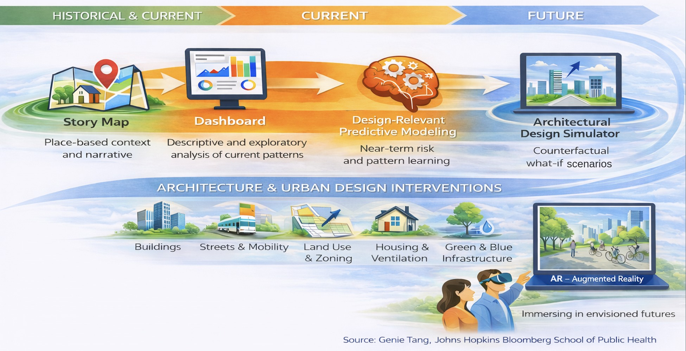

Spatial Health Informatics
Using spatial statistics, public health surveillance data, and interactive tools to understand where health risks concentrate and how the places people live influence their health.
Framework

The dashboard component, built for the Richmond case study:
Open the Richmond Spatial Decision Intelligence Explorer ↗
Focus Areas
Spatial Statistics
Clustering and hotspot methods such as Moran's I, LISA, and Getis-Ord Gi* to find where outcomes concentrate.
Housing and Health Equity
How housing conditions, environmental burden, and social vulnerability relate to health across neighborhoods.
Surveillance and Decision Support
Turning public health surveillance data into maps and dashboards that support decisions.
Interactive Visualization
Web-based charts and maps built in Python and ArcGIS so findings can be explored, not only read.
Projects
01Asthma and Environmental Justice in Contra Costa County
Spatial analysis of asthma prevalence against PM2.5, NO2, and the CDC/ATSDR Environmental Justice Index. Asthma showed significant spatial clustering (global Moran's I = 0.31, p < 0.01), with high-high clusters along the Richmond and Pittsburg corridor. The interactive explorer rebuilds the analysis on the 2024 index (global Moran's I = 0.69, queen contiguity, 999 permutations) across the 241 county tracts, with the City of Richmond outlined: exposure and burden layers, LISA cluster maps, a bivariate map, and priority tracts where exposure and burden coincide.
Open the explorer ↗02COVID-19 Surveillance Explorer
An interactive comparison of reported COVID-19 cases and deaths across countries, built on the Johns Hopkins CSSE global time series. Users add countries, switch between daily and cumulative counts and rates per 100,000, and read the data through a world choropleth, spatial cluster analysis, and EARS C2 alerts, the aberration-detection method used in syndromic surveillance.
Open the explorer ↗03Environmental Exposure and Independent Living Need in California
A statewide PM2.5 exposure surface built by ordinary kriging from 127 EPA monitors, crossed with a census tract need index combining disability, living alone, vehicle access, and English proficiency. The analysis identifies 1,112 of 9,048 California tracts where predicted exposure and need are both high.
Open project ↗04Automated Surveillance-to-Decision Pipeline
A modular pipeline that runs on a schedule, retrieves surveillance data, applies a tiered alert framework, writes the report, and delivers it with an automatic notification, with no manual steps. It is in daily production use for a public health surveillance program, and the same five-step structure was adapted as a prototype for Japan's national influenza surveillance data.
Open project ↗05Influenza Surveillance Research in Japan
Two conference abstracts with clinicians in Japan. One compares near real-time electronic health record data on pediatric influenza with national sentinel surveillance. The other evaluates an automated decision support framework for Japan's weekly influenza data: across seven seasons, its first EARS C2 alert came before the epidemic threshold every time, by a median of two weeks.
Open project ↗05aJapan Influenza Surveillance Explorer
Weekly influenza reports per sentinel site for all 47 prefectures, with EARS C2 alerts, lead times and false alarms, maps of the Kanto and Kansai areas and all of Japan, and spatial clustering. Public IDWR data only.
Open the explorer ↗06Interactive Story Map
An ArcGIS story map that combines maps and narrative to present public health data in a form people can explore.
Open story map ↗07Public Health Dashboard
An ArcGIS dashboard that brings public health indicators together in interactive maps and charts for monitoring and decision support.
08Disability Inclusion Recommendation Progress Report
A prototype quarterly report that turns an advisory committee's recommendation tracker into a visual, accessible format, with status summaries, timelines, and accessibility maps of two university campuses locating services, parking, transit, and sites tied to the recommendations.
Open project ↗09Exposure Lens Singapore
A reproducible spatial analysis of air temperature and PM2.5 readings from Singapore's open government data, testing spatial autocorrelation and local indicators of spatial association, with a clear statement of which methods are valid at this scale.
Open project ↗10Brain Volume Composition
An interactive Sankey diagram showing how intracranial volume divides across five levels of brain regions, built from MRICloud volumetric data. It demonstrates turning hierarchical data into an explorable web graphic.
Open project ↗11Housing, Environment, and Health Across Three Cities In development
A comparison of Richmond, California; Cambridge, United Kingdom; and Singapore using open housing, environmental, and health data, applying the same spatial and interactive methods across very different urban settings. The Richmond module is live in the explorer above; the Cambridge and Singapore modules follow.